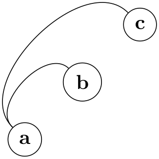
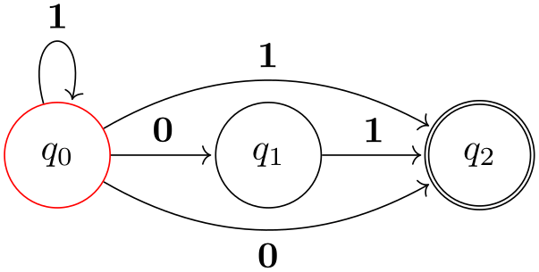
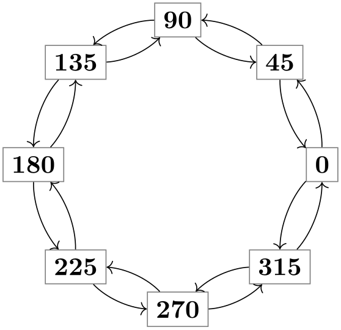

The TikZ and PGF Packages
Manual for version 3.1.10
Libraries
74 To Path Library¶
-
TikZ Library topaths ¶
\usetikzlibrary{topaths} %
LaTeX
and plain
TeX
\usetikzlibrary[topaths] %
ConTeXt
This library provides predefined to paths for use with the
to path operation. After loading this
package, you can say for instance
to [loop] to add a loop to a node.
This library is loaded automatically by TikZ, so you do not need to load it yourself.
74.1 Straight Lines¶
The following style installs a to path that is simply a straight line from the start coordinate to the target coordinate.
-
/tikz/line to(no value) ¶
Causes a straight line to be added to the path upon a to or an edge operation.
74.2 Move-Tos¶
The following style installs a to path that simply “jumps” to the target coordinate.
-
/tikz/move to(no value) ¶
Causes a move to be added to the path upon a to or an edge operation.
74.3 Curves¶
The curve to style causes the to path to be set to a curve. The exact way this curve looks can be influenced via a number of options.
-
/tikz/curve to(no value) ¶
-
/tikz/out=⟨angle⟩(no default) ¶
-
/tikz/in=⟨angle⟩(no default) ¶
-
/tikz/relative=⟨true or false⟩ (default true) ¶
-
/tikz/bend left=⟨angle⟩ (default last value) ¶
-
/tikz/bend right=⟨angle⟩ (default last value) ¶
-
/tikz/bend angle=⟨angle⟩(no default) ¶
-
/tikz/looseness=⟨number⟩ (no default, initially 1) ¶
-
/tikz/out looseness=⟨number⟩(no default) ¶
-
/tikz/in looseness=⟨number⟩(no default) ¶
-
/tikz/min distance=⟨distance⟩(no default) ¶
-
/tikz/max distance=⟨distance⟩(no default) ¶
-
/tikz/out min distance=⟨distance⟩(no default) ¶
-
/tikz/out max distance=⟨distance⟩(no default) ¶
-
/tikz/in min distance=⟨distance⟩(no default) ¶
-
/tikz/in max distance=⟨distance⟩(no default) ¶
-
/tikz/distance=⟨distance⟩(no default) ¶
-
/tikz/out distance=⟨distance⟩(no default) ¶
-
/tikz/in distance=⟨distance⟩(no default) ¶
-
/tikz/out control=⟨coordinate⟩(no default) ¶
-
/tikz/in control=⟨coordinate⟩(no default) ¶
Specifies that the to path should be a curve. This curve will leave the start coordinate at a certain angle, which can be specified using the out option. It reaches the target coordinate also at a certain angle, which is specified using the in option. The control points of the curve are at a certain distance that is computed in different ways, depending on which options are set.
All of the following options implicitly cause the curve to style to be installed.
The angle at which the curve leaves the start coordinate. If the start coordinate is a node, the start coordinate is the point on the border of the node at the given ⟨angle⟩. The control point will, thus, lie at a certain distance in the direction ⟨angle⟩ from the start coordinate.
\begin{tikzpicture}[out=45,in=135]
\draw (0,0) to
(1,0)
(0,0) to
(2,0)
(0,0) to
(3,0);
\end{tikzpicture}
The angle at which the curve reaches the target coordinate.
This option tells TikZ whether the in and out angles should be considered absolute or relative. Absolute means that an out angle of 30\(^\circ \) means that the curve leaves the start coordinate at an angle of 30\(^\circ \) relative to the paper (unless, of course, further transformations have been installed). A relative angle is, by comparison, measured relative to a straight line from the start coordinate to the target coordinate. Thus, a relative angle of 30\(^\circ \) means that the curve will bend to the left from the line going straight from the start to the target. For the target, the relative coordinate is measured in the same manner, namely relative to the line going from the start to the target. Thus, an angle of 150\(^\circ \) means that the curve will reach target coming slightly from the left.
\begin{tikzpicture}[out=45,in=135,relative]
\draw (0,0) to
(1,0)
to
(2,1)
to
(2,2);
\end{tikzpicture}

This option sets out=⟨angle⟩,in=\(180-\meta {angle}\),relative. If no ⟨angle⟩ is given, the last given bend left or bend right angle is used.

\usetikzlibrary {automata,positioning}
\begin{tikzpicture}[shorten >=1pt,node distance=2cm,on grid]
\node[state,initial] (q_0) {$q_0$};
\node[state] (q_1) [right=of q_0] {$q_1$};
\node[state,accepting](q_2) [right=of q_1] {$q_2$};
\path[->] (q_0) edge
node
[above] {0} (q_1)
edge
[loop above] node
{1} ()
edge
[bend left] node
[above] {1} (q_2)
edge
[bend right] node
[below] {0} (q_2)
(q_1) edge
node
[above] {1} (q_2);
\end{tikzpicture}

\begin{tikzpicture}
\foreach \angle in
{0,45,...,315}
\node[rectangle,draw=black!50] (\angle) at
(\angle:2) {\angle};
\foreach \from/\to in
{0/45,45/90,90/135,135/180,
180/225,225/270,270/315,315/0}
\path (\from) edge
[->,bend right=22,looseness=0.8] (\to)
edge
[<-,bend left=22,looseness=0.8] (\to);
\end{tikzpicture}
Works like the bend left option, only the bend is to the other side.
Sets the angle to be used by the bend left or bend right, but without actually selecting the curve to or the relative option. This is useful for globally specifying a bend angle for a whole picture.
This number specifies how “loose” the curve will be. In detail, the following happens: TikZ computes the distance between the start and the target coordinate (if the start and/or target coordinate are nodes, the distance is computed between the points on their border). This distance is then multiplied by a fixed factor and also by the factor ⟨number⟩. The resulting distance, let us call it \(d\), is then used as the distance of the control points from the start and target coordinates.
The fixed factor has been chosen in such a way that if ⟨number⟩ is 1, if the in and out angles differ by 90\(^\circ \), then a quarter circle results:
Specifies the looseness factor for the out distance only.
Specifies the looseness factor for the in distance only.
If the computed distance for the start and target coordinates are below ⟨distance⟩, then ⟨distance⟩ is used instead.
If the computed distance for the start and target coordinates are above ⟨distance⟩, then ⟨distance⟩ is used instead.
The minimum distance set only for the start coordinate.
The maximum distance set only for the start coordinate.
The minimum distance set only for the target coordinate.
The maximum distance set only for the target coordinate.
Set the minimum and maximum distance to the same value ⟨distance⟩. Note that this causes any computed distance \(d\) to be ignored and ⟨distance⟩ to be used instead.
\begin{tikzpicture}[out=45,in=135,distance=1cm]
\draw (0,0) to
(1,0)
(0,0) to
(2,0)
(0,0) to
(3,0);
\end{tikzpicture}
Sets the minimum and maximum out distance.
Sets the minimum and maximum in distance.
This option causes the ⟨coordinate⟩ to be used as the start control point. All computations of \(d\) are ignored. You can use a coordinate like +(1,0) to specify a point relative to the start coordinate.
This option causes the ⟨coordinate⟩ to be used as the target control point. You can use a coordinate like +(1,0) to specify a point relative to the end coordinate.
74.4 Loops¶
-
/tikz/loop(no value) ¶
This key is similar to the curve to key, but differs in the following ways: First, the actual target coordinate is ignored and the start coordinate is used as the target coordinate. Thus, it is allowed not to provide any target coordinate, which can be useful with unnamed nodes. Second, the looseness is set to 8 and the min distance to 5mm. These settings result in rather nice loops when the opening angle (difference between in and out) is 30\(^\circ \).
\begin{tikzpicture}
\node [circle,draw] {a} edge
[in=30,out=60,loop] ();
\end{tikzpicture}
-
/tikz/loop above(style, no value) ¶
Sets the loop style and sets in and out angles such that loop is above the node. Furthermore, the above option is set, which causes a node label to be placed at the correct position.
\begin{tikzpicture}
\node [circle,draw] {a} edge
[loop above] node
{x} ();
\end{tikzpicture}
-
/tikz/loop below(style, no value) ¶
Works like the previous option.
-
/tikz/loop left(style, no value) ¶
Works like the previous option.
-
/tikz/loop right(style, no value) ¶
Works like the previous option.
-
/tikz/every loop(style, initially ->,shorten >=1pt) ¶
This style is installed at the beginning of every loop.
\begin{tikzpicture}[every loop/.style={}]
\draw (0,0) to
[loop above] () to
[loop right] ()
to
[loop below] () to
[loop left] ();
\end{tikzpicture}